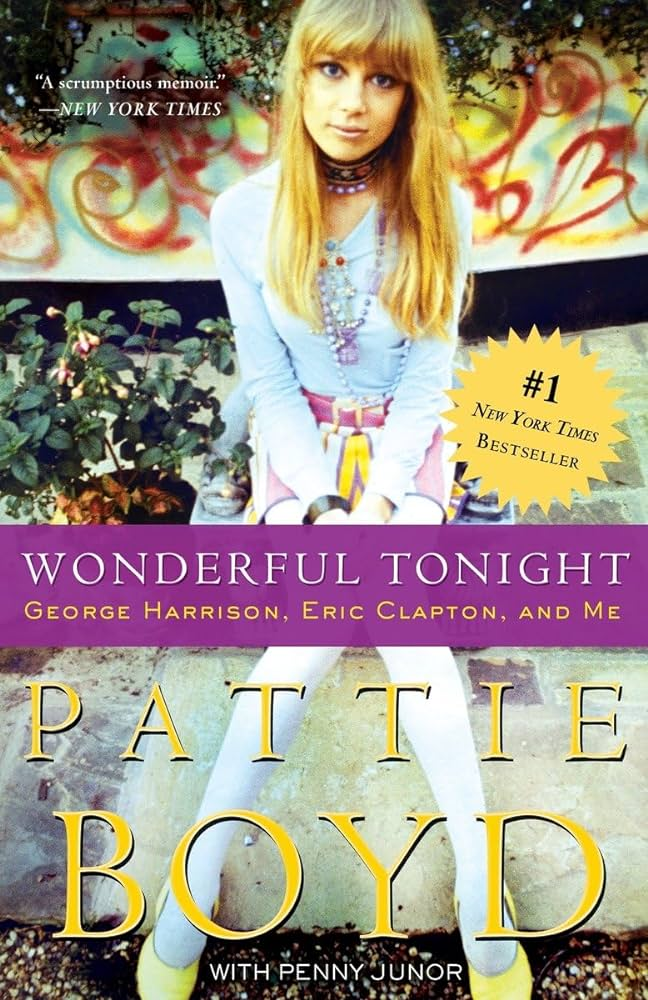
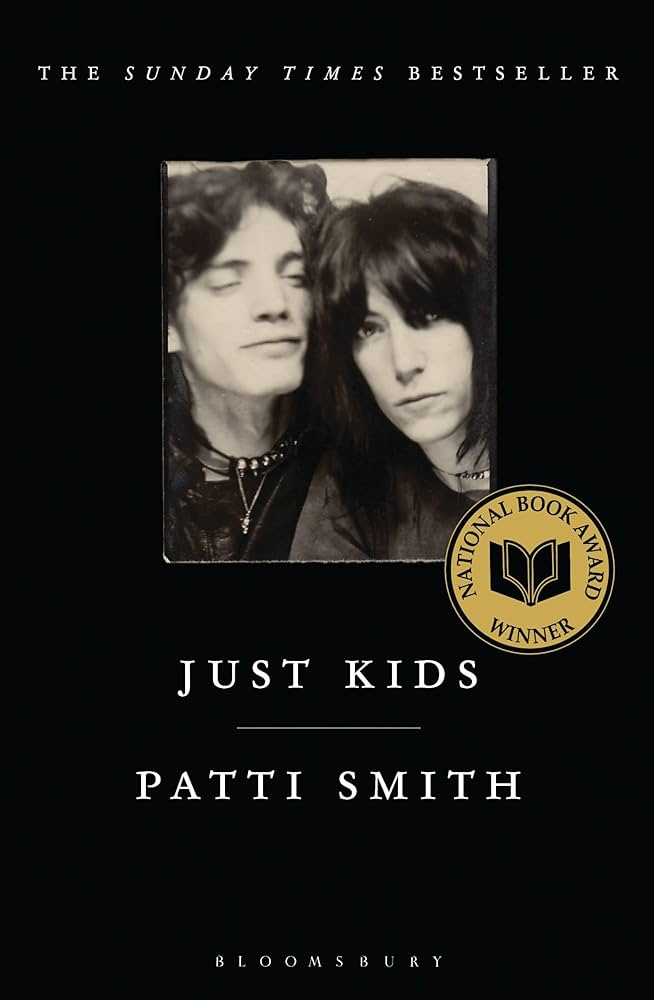
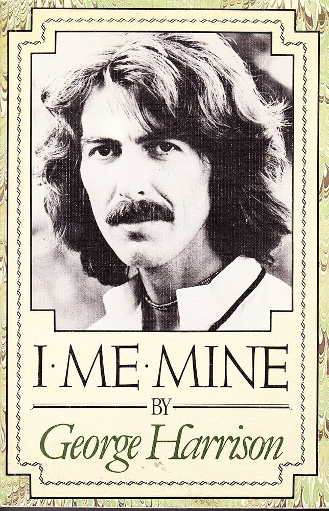

my bookshelf isn't just a stack of paper and ink, it's a reflection of who I am. A diverse collection, as expansive as the cosmos and as intimate as a whispered secret. it's as engrossing as a gripping tale, traversing through realms of fantasy and depths of reality, capturing every thought, every insight, every chapter of my life.

wonderful tonight
by patty boyd
"wonderful tonight" is a captivating memoir by pattie boyd, the former wife of music legends george harrison and eric clapton. in this heartfelt narrative, boyd shares her experiences of love, loss, and the tumultuous world of rock'n'roll. she provides an intimate look into her relationships with two of the most iconic musicians of the 20th century, offering insights into their creative processes, personal struggles, and the complexities of fame. boyd's candid storytelling and vivid anecdotes make "wonderful tonight" a compelling read for music enthusiasts and anyone fascinated by the intertwining of art, romance, and celebrity.

just kids
by patty smith
"just kids" is a poignant memoir by patti smith, offering a glimpse into her formative years in new york city alongside renowned photographer robert mapplethorpe. through lyrical prose, smith paints a vivid portrait of their bohemian lifestyle, artistic aspirations, and deep bond as friends and soulmates. from their struggles as young artists to their eventual rise to fame, "just kids" chronicles their journey with honesty, vulnerability, and profound nostalgia. smith's poetic reflection and heartfelt storytelling make "just kids" a timeless ode to friendship, creativity, and the vibrant spirit of youth in the bustling streets of 1970s new york city.

i me mine
by george harrison
"i me mine" is an introspective autobiography by george harrison, offering readers a rare glimpse into the inner workings of one of music's most enigmatic figures. through a collection of personal reflections, lyrics, and photographs, harrison delves into his spiritual journey, creative process, and life in and beyond the beatles. from the heights of fame to the depths of introspection, "i me mine" provides valuable insights into harrison's philosophical musings, his passion for eastern spirituality, and his enduring legacy as a musician and thinker. with its candid revelations and timeless wisdom, "i me mine" is an essential read for fans seeking a deeper understanding of the man behind the music.
daisy jones and the six
by riley keough
"daisy jones & the six" by riley keough is a captivating novel that takes readers on a nostalgic journey through the turbulent world of 1970s rock'n'roll. through a series of interviews and retrospectives, keough immerses readers in the rise and fall of the iconic band, daisy jones & the six. set against the backdrop of the music industry's golden era, the novel explores themes of love, ambition, and the price of fame. with its richly drawn characters, evocative storytelling, and immersive narrative style, "daisy jones & the six" is a compelling homage to the power of music and the indelible impact of artistic collaboration.